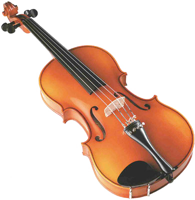

Немного о сайте
Это сайт-лендинг, на нем я написал краткую статью о смычковых инструментах. За основу взято краткое описание инструментов, его особенности и фото. Источником информации послужили общедоступные источники в интернете. Я очень надеюсь, что мой сайт-лендинг поможет вам немного разобраться в видах и различиях смычковых инструментов.Смычковые инструменты
В смычковых музыкальных инструментах звуки извлекаются при трении волоса смычка о струны; в связи с этим звуковая характеристика их в значительной степени отличается от щипковых инструментов. Смычковые инструменты отличаются высоким звуковым качеством и бесконечными возможностями в области ехники исполнения и поэтому являются ведущими в различных opкестрах и ансамблях и широко используются для сольного исполнения. К этой подгруппе инструментов относятся скрипки, альты, виолончели, контрабасы, а также ряд национальных инструментов1 (грузинские чианури, узбекский гиджак, азербайджанская кеманча и др.).Группы смычковых инструментов
- Группа смычковых инструментов считается основой симфонического оркестра и делится на пять партий:
- Первые и вторые скрипки.
- Третьи альты
- Четвертые виолончели.
- Пятые контрабасы.
- Изредка выписывается партия для самого низкого струнного смычкового инструмента — октобаса.
Смычковые струнные инструменты образуют наиболее монолитную и универсальную группу, имеющую высокий музыкально-технический потенциал, большой диапазон и ровное звучание на всём его протяжении, обширный арсенал приёмов игры и штрихов. Большое количество смычковых струнных в оркестре позволяет различным образом их разделять и группировать для исполнения многообразной фактуры. Диапазон всей смычковой группы (включая октобас) охватывает почти всю октавную систему (от до субконтроктавы до пятой октавы), но широко используются только неполные восемь (без октобаса): от до контроктавы до пятой октавы.
Скрипки
Скрипка — смычковый струнный музыкальный инструмент высокого регистра. Имеет народное происхождение, современный вид приобрела в XVI веке, получила широкое распространение в XVII веке. Скрипка состоит из двух основных частей: корпуса и грифа, между которыми натянуты струны. Струны прижимаются четырьмя пальцами левой руки к грифу (большой палец исключён). По струнам водят смычком, находящимся в правой руке играющего. Тембр скрипки «густой» в низком регистре, «мягкий» в среднем и «блестящий» в верхнем. Современная скрипка один из главных инструментов симфонического оркестра. Используется как сольный, ансамблевый и оркестровый инструмент.
Альты
Альт — смычковый струнный музыкальный инструмент, принадлежащий к скрипичному семейству. Имеет четыре струны, настроенные на квинту ниже обычной скрипки. Зародился приблизительно в конце XV - начале XVI века. На протяжении XVII - XVIII вв. альт в симфоническом оркестре редко выполнял более значительную функцию, нежели гармоническое заполнение. Только XIX в., когда в моду вошел инструментальный колорит, альт начал рассматриваться как инструмент, обладающий собственной индивидуальностью. Как сольный инструмент используется редко, входит в состав смычкового квартета, ансамбля, симфонического оркестра.
Виолончели
Виолончель — смычковый струнный музыкальный инструмент скрипичного семейства басо-тенорового регистра. Известен с первой половины XVI века. Конструкция аналогична скрипке, но больше по размерам. Приёмы игры те же, что на скрипке. Играют сидя, ставя виолончель перед собой и упирая в пол шпилем. иолончель обладает широкими выразительными возможностями и тщательно разработанной техникой исполнения, используется как сольный, ансамблевый и оркестровый инструмент.
Контрабас
Контрабас — самый крупный по размерам (около двух метров в высоту) и амый низкий по звучанию из широко используемых смычковых струнных музыкальных инструментов, объединяющий в себе черты скрипичного семейства и семейства виол. Первый инструмент появился в XVII в. Имеет 4 струны, 4 октавы. На контрабасе играют стоя, держа его перед собой, пользуясь смычком и 4-мя пальцами левой руки, а также большим пальцем, как на виолончели. Используется как сольный, ансамблевый и оркестровый инструмент.
Октобас
Скрипичные мастера одно время предположили, что размеры корпуса контрабаса недостаточно велики для низких звуков. И тогда они начали экспериментировать. Сохранилось несколько экземпляров гигантских контрабасов — их и называют октобасами. В одном из музеев Англии демонстрируется инструмент под названием «Голиаф». Его длина — 2 метра 60 сантиметров. Но широкого распространения октобасы не получили. Это объясняется даже не очевидным их неудобством из-за размеров, а тем, что мастера не получили ожидаемой силы и насыщенности звучания. Конечно, октобас мог издавать более низкие звуки, никакими другими преимуществами перед контрабасом, как выяснилось на практике, он не обладал.